Разработка главной формы меню
Теоретическая часть
Цель работы: Приобретение практических навыков создания и использования главной кнопочной формы (меню) в Microsoft Access для организации навигации между объектами базы данных и обеспечения удобного интерфейса пользователя.
Главная кнопочная форма (меню) в MS Access представляет собой специализированную форму-навигатор, которая служит центральным узлом управления базой данных. Она содержит набор кнопок, команд или гиперссылок для быстрого доступа к основным объектам базы данных: формам, отчетам, запросам, а также для выполнения макросов и открытия других вспомогательных форм. Кнопочная форма позволяет скрыть от пользователя сложную структуру базы данных и предоставить интуитивно понятный интерфейс для выполнения повседневных задач.
Практическая часть
1. Запускаем MS Access и открываем базу данных
2. На главной панели нажимаем на кнопку «Файл» и переходим в параметры
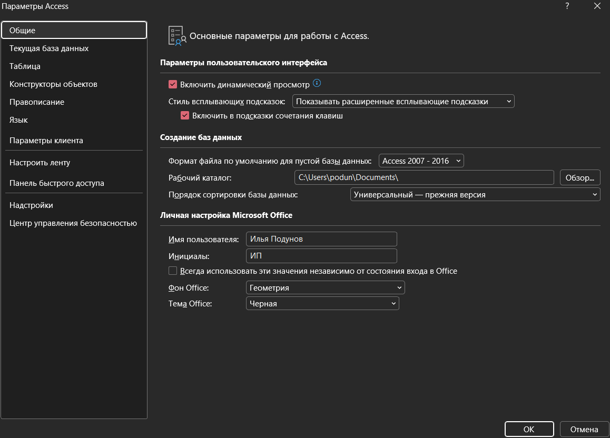
3. Далее мы выбираем в выпадающем списке «Все команды» и в правом окне создаем новую вкладку
4. Далее мы ее называем «Кнопочная форма» и нажимаем «ОК», группу в этой вкладке мы называем «Меню»
5. Выделяем в левом окне «Диспетчер кнопочных форм» и добавляем ее во вкладку «Кнопочная форма» группы «Меню», которую ранее создали.
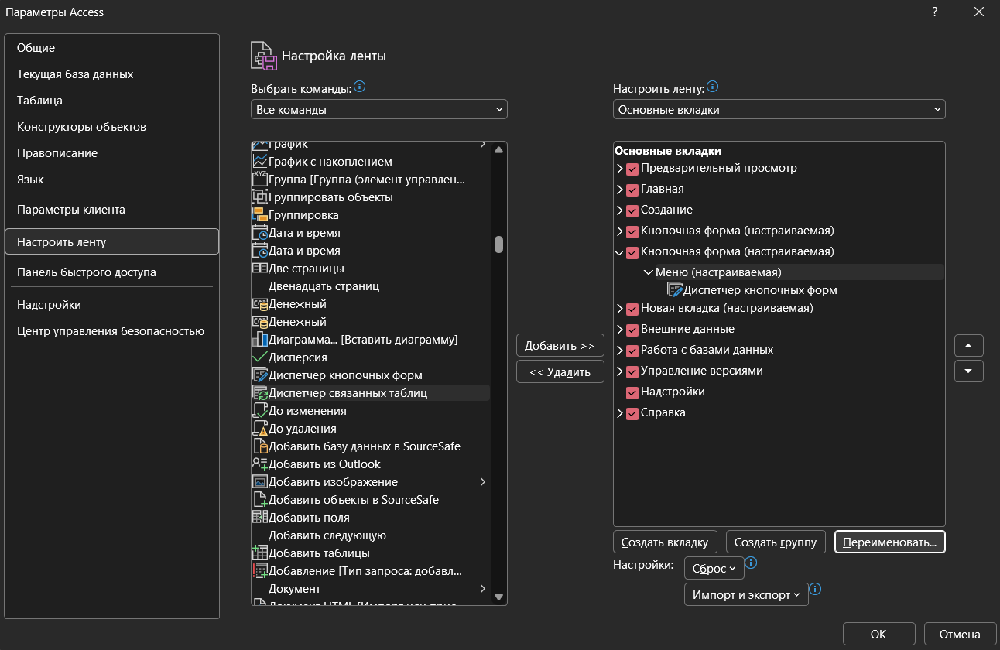
6. После всех действий у нас создается новая вкладка «Кнопочная форма»
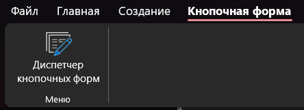
7. При первом нажатии у нас появится предупреждение о том, что кнопочной формы нету в этой базе данных, нажимаем на кнопку «Да»
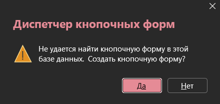
8. После нажатия у нас откроется «Диспетчер кнопочной формы»
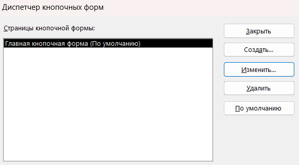
9. Следующим шагом будет создание страницы ввода данных. Для этого в окне «Диспетчер кнопочных форм» нажимаем на кнопку «Создать»
10. Теперь задаем имя страницы кнопочной формы «Форма ввода данных»
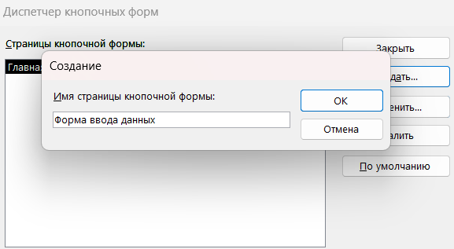
11. Далее таким же путем создаем новую страницу кнопочной формы с именем «Запросы»
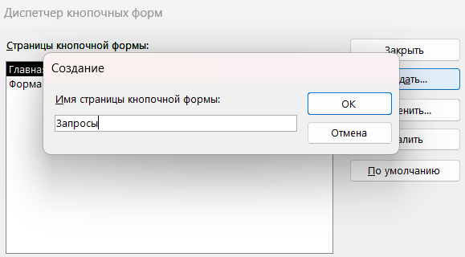
12. Также создаем новую страницу с именем «Отчеты»
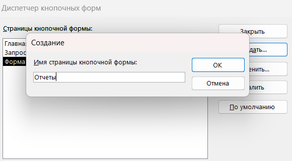
13. После этого создаем элементы главной кнопочной формы, для этого в окне «Диспетчер кнопочных форм» выделяем страницу «Главная кнопочная форма» и нажимаем на кнопку «Изменить». У нас откроется окно «Изменение страницы кнопочной формы»
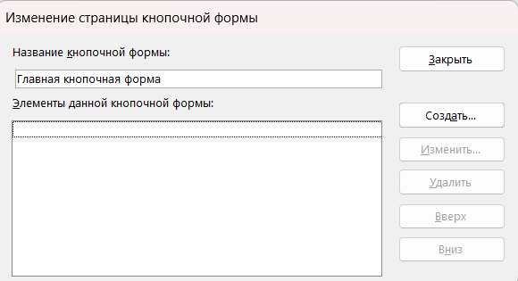
14. В этом окне нажимаем на кнопку «Создать», у нас откроется новое окно «Изменение элемента кнопочной формы», в которой мы выбираем:
— Текст: Ввод данных
— Команда: Перейти к кнопочной форме
— Кнопочная Форма: форма ввода данных
— И нажимаем на кнопку «Ок»
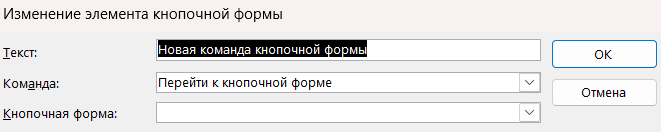
15. Аналогичным методом необходимо создать элементы: «Запросы» и «Отчеты»
16. Также необходимо сделать элемент «Выход из базы». Нажимаем на кнопку создать:
— Текст: Выход из базы
— Команда: Выйти из приложения
17. После создания закрываем окно «Изменение страницы кнопочной формы»
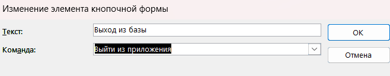
18. Теперь нам необходимо создать элементы для кнопочной формы «Форма ввода данных». Для этого выделяем «Форма ввода данных» в диспетчере кнопочных форм и нажимаем на кнопку «Изменить»
19. Далее в этом окне нажимаем на кнопку «Создать», у нас откроется новое окно «Изменение страницы кнопочной формы»:
— Текст: Водители
— Команда: Открыть форму для изменения
— Форма: Выбираем из списка предложенные формы (Водители)
20. В окне «Изменение страницы кнопочной формы» отобразится элемент «Водители»
21. Аналогично делаем со всеми остальными формами, которые ранее создавались в базе данных
22. Теперь необходимо сделать так, чтобы была кнопка возврата в главную форму
23. Для этого нажимаем на кнопку «Создать» и в появившемся окне выбираем команду «Перейти к кнопочной форме», выбираем «Главная кнопочная форма» и вводим «Перейти к главной кнопочной форме» и нажимаем на кнопку «Ок» и закрываем окно «Изменение страницы кнопочной формы»
24. Аналогично добавляем все эти элементы для Запросов Отчетов и добавление выхода из кнопочной формы.
25. Чтобы при открытии базы данных у нас сразу открывалась кнопочная форма необходимо открыть «Параметры» и на вкладке «Текущая база данных» выбрать форма просмотра «Кнопочная форма»
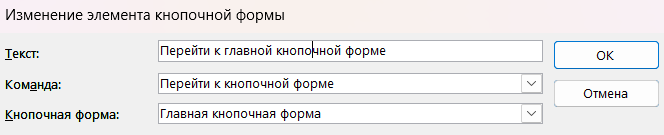
26. В итоге при запуске базы данных будет первоначально открываться кнопочная форма
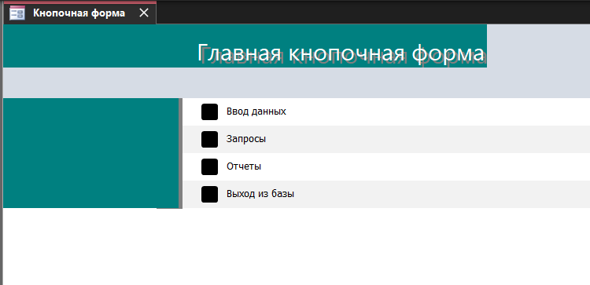
27. Сохраните и закройте базу данных